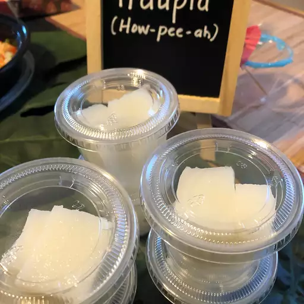

Easy Haupia

Description
I don't mean to brag but my husband makes the best haupia! While I can't give away his secrets, here is a great recipe without his special touch.
This haupia recipe is a popular Hawaiian dessert often found at luaus.
Ingredients
- 5 tablespoons cornstarch
- ¼ cup white sugar
- ⅛ teaspoon salt
- 2 cups coconut milk
Steps
- Place cornstarch, sugar, and salt into a saucepan; stir in 1/2 cup coconut milk to make a smooth paste. Stir in remaining 1 1/2 cups coconut milk,; bring to a simmer over low heat, stirring constantly. Cook and stir until thickened so that it coats the back of a spoon, about 5 minutes. Pour into a 9x13-inch baking dish; refrigerate until cold.
- Cut chilled pudding into 24 squares and serve cold.